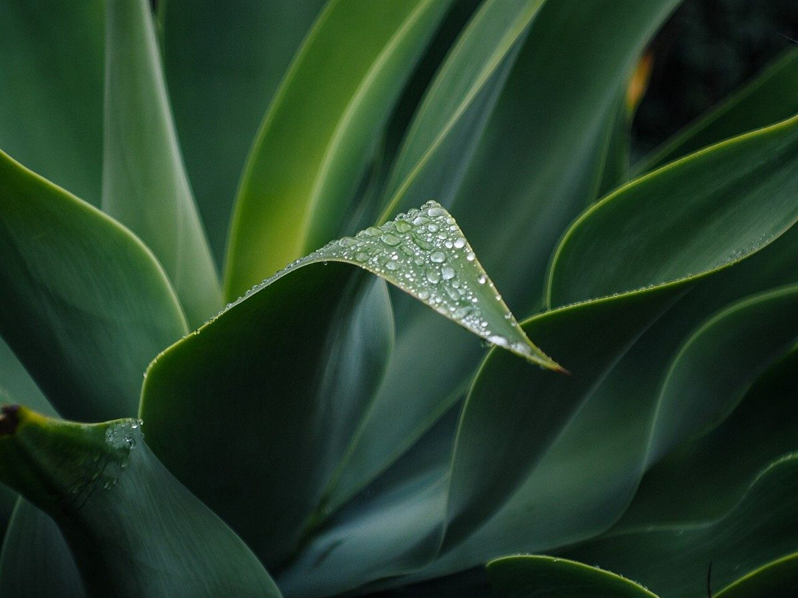

カフェ / 鹿児島県鹿児島市名山町
かふぇ蜻蛉
鹿児島市名山町にあるカフェ「かふぇ蜻蛉」のご案内ページです。営業時間やメニューなど、詳しいことは準備中。まずはInstagramをのぞいてみてください。

制作側の連想
虫偏をほどくと、青と令
「蜻蛉」という屋号の読みや由来は分かりません(振り仮名も付けていません)。制作側は文字そのものに目を留めました。「蜻」は「虫」に「青」、「蛉」は「虫」に「令」と分けて眺められます。そこでこのサイトは、虫偏を外して残った「青」と「令」を、写真を並べる二つの棚にしています。お店の理念や由来とは無関係の、制作側の連想です。
蜻＝虫＋青
蛉＝虫＋令
棚その一
青の棚
青や緑の色をした写真を並べました。お店の写真ではなく、国外・撮影地不明のフリー素材です。




棚その二
令の棚
「令」から制作側が連想した、きちんと整列したもの(縦に並ぶ板、格子、斜めの板)を並べました。お店とは関係のないイメージです。


ご案内
お店のこと(確認できたものだけ)
| 所在地 | 〒892-0821 鹿児島県鹿児島市名山町3-23 |
|---|---|
| 電話 | なし |
| 営業時間 | 準備中 |
| 定休日 | 準備中 |
| ご予約 | 準備中 |
| 駐車場 | 準備中 |
| SNS | Instagram @tonbo.0306 |